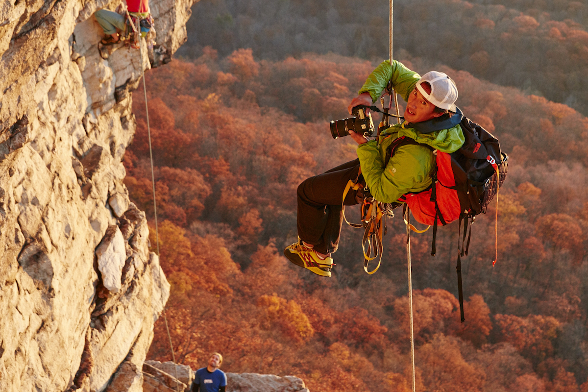
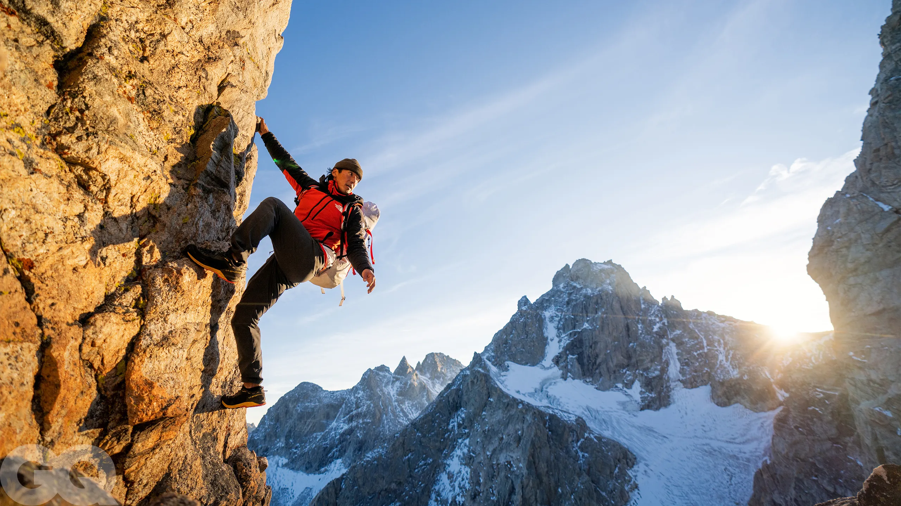
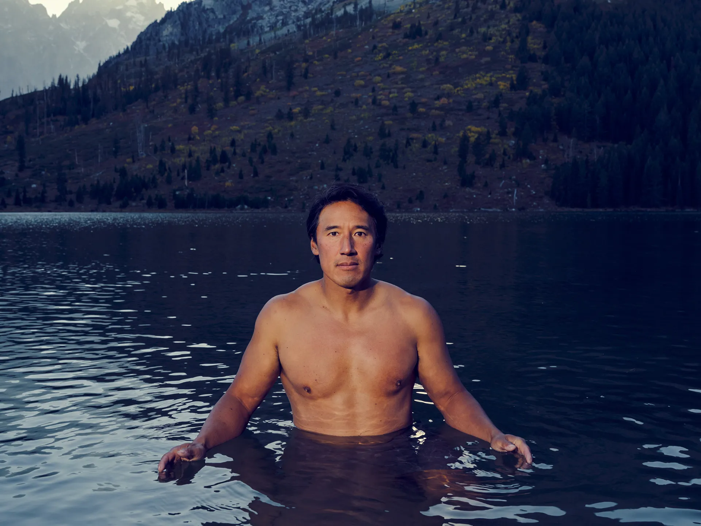

Jimmy Chin (born October 12, 1973) is an American professional mountain athlete, photographer, skier, film director, and author.
Chin has been a professional climber and skier on The North Face Athlete team for over 20 years. In 2006, Chin achieved the first successful American ski descent from the summit of Mount Everest with Kit and Rob DesLauriers. Five years later, Chin, Conrad Anker, and Renan Ozturk captured the first ascent of "Shark's Fin", a granite wall on India's Meru Peak.
Chin's work documenting expeditions and climbs has been featured in numerous publications, including National Geographic, The New York Times Magazine, Vanity Fair, Outside magazine and others. In 2019, Chin was awarded the National Geographic "Photographer's Photographer Award" by his peers. His first book of photography documenting his career in the mountains, There and Back, became a New York Times Best Seller in 2021.
Chin co-directs with his wife Elizabeth Chai Vasarhelyi. Together they directed the documentary Meru, which won numerous awards including the Audience Award at the Sundance Film Festival and was shortlisted for an Academy Award, and Free Solo, which won an Academy Award for Best Documentary Feature, a BAFTA and seven Primetime Emmys. Free Solo had the highest-grossing opening weekend in history for a documentary. The film eventually grossed $29 million in the box office. Chin and Chai's 2021 documentary, The Rescue, chronicles the Tham Luang cave rescue. The Rescue won numerous awards, including the People's Choice Award at Toronto International Film Festival, and was also shortlisted for an Academy Award. In 2022, they released their documentary Return to Space about Elon Musk and SpaceX. Their first scripted feature Nyad, about Diana Nyad's historic swim from Cuba to Florida, starred Annette Bening and Jodie Foster and premiered in 2023.
From 1999 to 2001, Chin organized climbing expeditions to Pakistan's Karakoram Mountains. He signed a sponsorship agreement with The North Face in 2001.
In 2002, he was asked to join a National Geographic expedition to make an unsupported crossing of the remote Chang Tang Plateau in Tibet with Galen Rowell, Rick Ridgeway and Conrad Anker. The expedition was featured in National Geographic's April 2003 issue and documented in Rick Ridgeway's book The Big Open.
In 2003, Chin headed to Everest with Stephen Koch. They attempted the direct North Face via the Japanese Couloir to the Hornbein Couloir in alpine style (eschewing supplemental oxygen, fixed ropes, and camps). They were unsuccessful and both were nearly killed in an avalanche.
In May 2004, Chin climbed Everest with David Breashears and Ed Viesturs while filming for Working Title on a feature film project with Stephen Daldry. Chin later accompanied Ed Viesturs to Annapurna in 2005. Viesturs successfully climbed Annapurna and finished his quest to climb all of the world's 8000-metre peaks without oxygen. Chin photographed the expedition and the story was featured in the September 2005 issue of Men's Journal.
In October 2006, he achieved the first successful American ski descent of Mount Everest with Kit DesLauriers and Rob DesLauriers. They skied from the summit and are the only people to have skied the South Pillar Route on the Lhotse Face.
Chin was born and raised in Mankato, Minnesota, and graduated from Wayland Academy. Both his parents are from China, his father was born in Wenzhou, and his mother was born in Harbin. They both worked as librarians.
He is a 1996 alumnus of Carleton College, where he received a BA in Asian Studies. He first became involved in climbing while at Carleton. After college, he became a climbing "dirtbag", despite his parents' disapproval. He serendipitously discovered photography when he borrowed his sleeping climbing partner's camera to take a photo. They sold the picture for $500, and this started his photography career.
On May 26, 2013, Chin married film director and producer Elizabeth Chai Vasarhelyi. As of 2015, Chin splits his time between New York City and Jackson, Wyoming. Chin and Vasarhelyi have two children: Marina and James.
